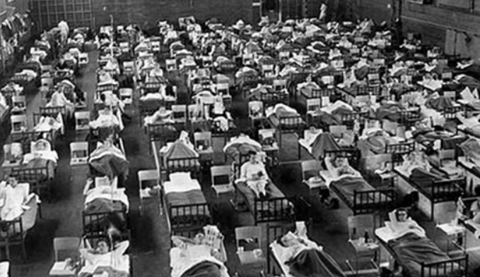

Gripe Asiática
Tendo sua origem no Norte da China, em fevereiro de 1957, a pandemia da Gripe Asiática se disseminou em duas ondas com altas taxas de letalidade e de portadores da doença, levando à morte 4 milhões de pessoas. Em 4 de maio de 1957, as primeiras notificações de casos foram dadas a OMS (Organização Mundial da Saúde), que anunciou em 17 de maio a ocorrência da gripe no Oriente, prognosticando uma epidemia amplamente disseminada. Amostras do novo vírus foram direcionadas aos laboratórios para a criação de vacinas. A Gripe Asiática afetou entre 40 e 50% das pessoas no mundo, destas, 25 a 30% apresentaram a forma clínica típica da doença, benigna, sendo que a maior parte dos óbitos foi por pneumonia bacteriana secundária, majoritariamente em pessoas jovens ou idosas. O índice de mortalidade foi de 1 a cada 4.000 contaminados, sendo mais de 50% na faixa etária de 5 a 19 anos de idade.
De forma rápida, o vírus se amplificou, atingindo em dois meses Singapura e Hong-Kong, onde expandiu-se globalmente, espalhando-se na Austrália, Índia, África, Europa e Estados Unidos, e, alastrando-se por todos os outros países em 10 meses. No dia 7 de agosto, em decorrência do desembarque de passageiros vindos da África, no navio Moçambique, a gripe introduziu-se em Portugal, onde a epidemia se intensificou.
A causa dessa pandemia foi o vírus Influenza A/Cingapura/1/57 (H2N2), com as glicoproteínas HA e NA distintas de todos os tipos anteriores, que substituiu o Influenza A (H1N1) que circulava no mundo desde a pandemia de 1918-1920. O isolamento do vírus ocorreu primeiramente no Japão, em 1957, seguido dos Estados Unidos e Inglaterra, no mesmo ano.
Em 1957, cerca de 2 milhões de pessoas morreram, ocasionando um déficit na saúde e muita preocupação. Os impactos na economia foram significativos, causando o fechamento de algumas empresas e negócios. Ocorreram muitas infecções em crianças, espalhando-se nas escolas e levando ao fechamento de muitas delas.
A Gripe Asiática matou pelo menos meio milhão de pessoas, se concentrando mais em gestantes, idosos e naqueles com doenças cardíacas e pulmonares pré-existentes, houve também ocorrências em crianças, porém, os casos raramente eram fatais. As medidas que eles tomaram para que se diminuísse a propagação do vírus foi o afastamento social, suspensão das aulas nas escolas e o uso obrigatório de máscaras em lugares com aglomerações. Depois que foi desenvolvida uma vacina para H2N2, introduzida em 1957, a pandemia diminuiu. Em 1958, houve uma segunda onda, com o H2N2 passando a fazer parte da onda regular da gripe sazonal.

Fonte: WordPress.com
A Gripe Asiática (H2N2), extinguiu-se da humanidade em 1968, considera-se que ela tenha sido eliminada da natureza. A gripe H2N2 é mantida em frascos nos laboratórios de todo o mundo.
Curiosidade:
- A “gripe asiática” de 1957 foi a primeira pandemia de gripe controlada por uma vacinação. A melhoria da assistência médica, juntamente com a criação e disponibilidade da vacina, permitiu que menos vítimas sucumbissem ao vírus.
Para saber mais:
https://www.scielo.br/scielo.php?script=sci_arttext&pid=S0074-02761960000100004
https://www.medicina.ulisboa.pt/newsfmul-artigo/99/epidemias-e-pandemias-na-historia-da-humanidade
https://www.qualittas.com.br/blog/index.php/as-principais-pandemias-de-gripe-dos-ultimos-seculos/
https://portal.fiocruz.br/noticia/pandemia-de-gripe-dez-anos-depois-como-agir-frente-ao-inevitavel
https://saude.abril.com.br/medicina/gripe-quais-foram-as-maiores-epidemias-da-historia/
https://www.medicinanet.com.br/conteudos/biblioteca/2168/influenza_gripe.htm